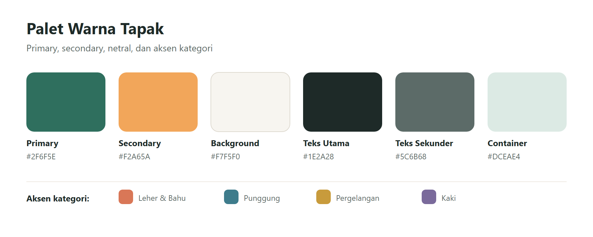
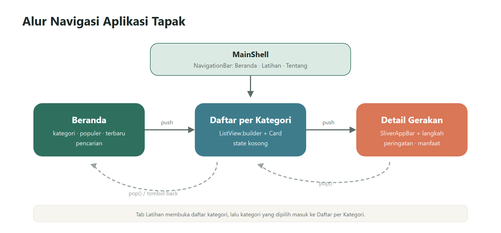
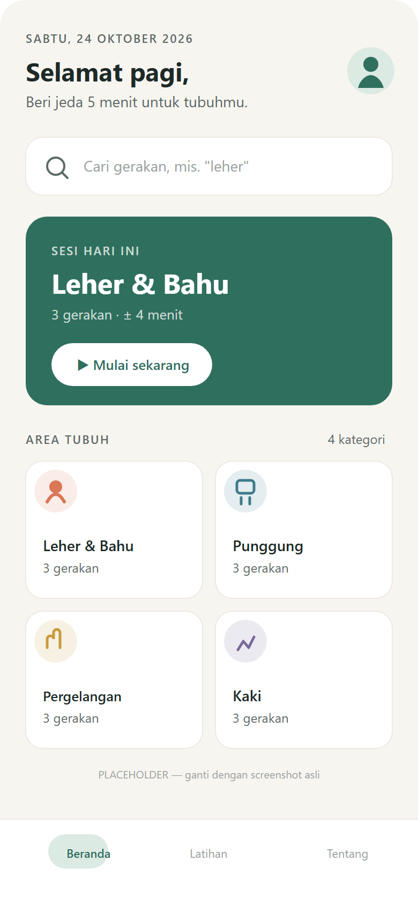
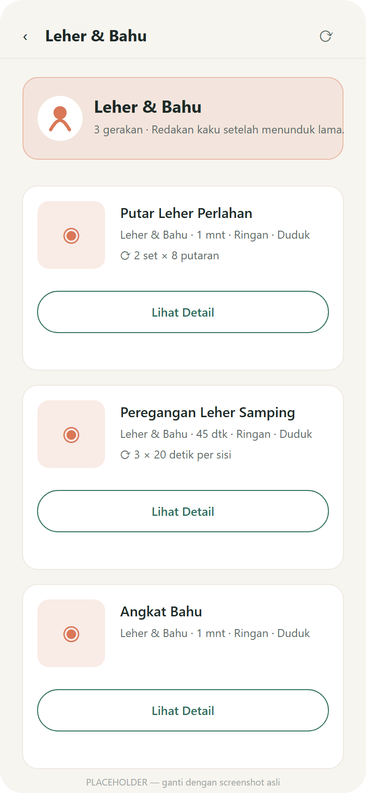
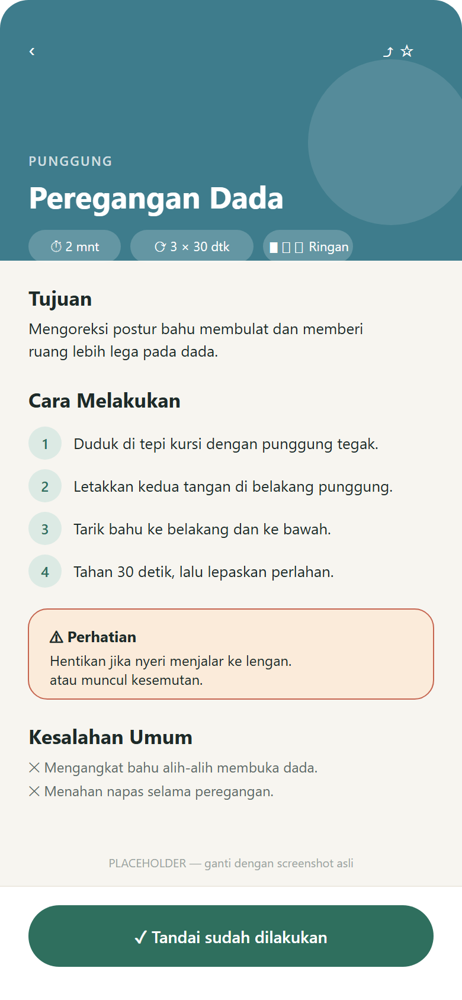

APLIKASI TAPAK: PANDUAN PEREGANGAN DAN ERGONOMI BERBASIS FLUTTER
Disusun oleh:
Nama: [NAMA] NIM: [NIM] Kelas: [KELAS]
PROGRAM STUDI [NAMA PROGRAM STUDI] FAKULTAS [NAMA FAKULTAS] [NAMA UNIVERSITAS] 2026
Perkembangan perangkat mobile telah mengubah cara masyarakat menyelesaikan pekerjaan sehari-hari. Laptop dan telepon pintar memungkinkan aktivitas mengetik, membaca, serta berdiskusi dilakukan dalam posisi duduk yang relatif lama. Kebiasaan tersebut menimbulkan konsekuensi ergonomis, antara lain kekakuan otot leher, nyeri punggung bagian atas, dan ketegangan pada pergelangan tangan. World Health Organization (2020) mencatat bahwa perilaku sedentari yang berkepanjangan berkontribusi terhadap penurunan kualitas kesehatan muskuloskeletal. Di sisi lain, kesadaran untuk melakukan peregangan singkat masih rendah karena keterbatasan pengetahuan mengenai gerakan yang tepat, durasi yang sesuai, serta risiko yang perlu dihindari.
Berdasarkan kondisi tersebut, penulis merancang aplikasi mobile bernama Tapak yang menyajikan panduan peregangan dan ergonomi secara terstruktur. Aplikasi ini mengelompokkan gerakan berdasarkan area tubuh—leher dan bahu, punggung, pergelangan tangan, serta kaki—sehingga pengguna dapat menemukan panduan yang relevan dengan keluhan yang dirasakan. Setiap gerakan dilengkapi tujuan, langkah pelaksanaan, kesalahan umum, peringatan keselamatan, dan manfaat. Dengan demikian, Tapak tidak sekadar menampilkan daftar gerakan, tetapi berfungsi sebagai media edukasi ringkas yang dapat diakses kapan saja melalui perangkat mobile.
Tema kesehatan kerja dipilih dengan pertimbangan berikut.
Aplikasi mobile memiliki karakteristik penggunaan yang singkat, berulang, dan personal. Panduan peregangan menit-menit awal bekerja paling efektif apabila dapat diakses secara cepat, tanpa proses masuk yang berbelit, dan dengan navigasi yang dangkal. Oleh karena itu, Tapak dirancang menggunakan tiga lapis navigasi yang sederhana: beranda sebagai pusat orientasi, daftar per kategori sebagai penyaring informasi, dan detail sebagai halaman pendalaman. Pola tersebut sesuai dengan prinsip progressive disclosure, yaitu menyajikan informasi secara bertahap sesuai kebutuhan pengguna.
Dari sisi teknis, pengembangan aplikasi ini melatih kompetensi yang relevan dengan mata kuliah Mobile Programming, meliputi penyusunan antarmuka responsif dengan widget Flutter, pengelolaan navigasi antarhalaman, pemisahan lapisan data dan tampilan, serta penyiapan arsitektur yang memungkinkan penggantian sumber data dari berkas JSON lokal menjadi layanan API.
Tujuan penyusunan laporan dan pengembangan aplikasi ini adalah sebagai berikut.
Row, Column, Container, Card, ListView, GridView, dan SliverAppBar.Aplikasi dibatasi pada konten edukasi peregangan ringan dan tidak memberikan diagnosis medis. Data yang digunakan merupakan data dummy sebanyak dua belas gerakan dalam empat kategori. Aplikasi belum memiliki fitur autentikasi, basis data daring, maupun pencatatan riwayat pengguna secara permanen.
Tapak mengusung konsep calm wellness: antarmuka yang tenang, hangat, dan tidak klinis. Kesan tersebut dibangun melalui latar bernuansa krem, warna utama hijau kebiruan yang menenangkan, serta aksen jingga hangat sebagai penanda informasi waktu. Warna kategori dibuat berbeda namun tetap memiliki tingkat saturasi yang setara agar tidak menimbulkan kesan ramai.
Tabel 2.1 Palet warna aplikasi Tapak
| Peran | Nama | Kode HEX | Penggunaan |
|---|---|---|---|
| Primary | Deep Teal | #2F6F5E |
Tombol utama, ikon aktif, header gradien |
| Primary Container | Sage Tint | #DCEAE4 |
Latar chip terpilih, badge, kartu sekunder |
| Secondary | Warm Amber | #F2A65A |
Aksen durasi dan sorotan |
| Secondary Container | Amber Tint | #FCEBD8 |
Latar kartu peringatan |
| Background | Bone | #F7F5F0 |
Latar seluruh halaman |
| Surface | White | #FFFFFF |
Kartu dan permukaan konten |
| Surface Variant | Stone | #EDE9E1 |
Garis pemisah dan latar input |
| Teks Utama | Ink | #1E2A28 |
Judul dan isi utama |
| Teks Sekunder | Slate | #5C6B68 |
Deskripsi dan keterangan |
| Teks Nonaktif | Mist | #9AA5A2 |
Placeholder dan ikon pasif |
| Semantik Aman | Success Green | #3F8F63 |
Status gerakan selesai |
| Semantik Peringatan | Warning Red | #C0563F |
Kartu peringatan |
Warna aksen kategori ditetapkan sebagai berikut: Leher & Bahu menggunakan Clay #D97757, Punggung menggunakan Deep Cyan #3E7C8C, Pergelangan Tangan menggunakan Mustard #C89B3C, dan Kaki menggunakan Muted Plum #7A6A9B.
Pemilihan palet tersebut mempertimbangkan keterbacaan. Rasio kontras teal terhadap putih mencapai sekitar 5,9:1, sedangkan teks Ink terhadap latar Bone sekitar 13:1. Keduanya memenuhi ambang minimum WCAG AA untuk teks berukuran normal. Warna Amber tidak digunakan sebagai warna teks di atas latar terang karena rasio kontrasnya rendah; warna tersebut hanya dipakai sebagai isian, ikon besar, atau garis aksen.

Gambar 2.1 Palet warna aplikasi Tapak
Tipografi menggunakan dua keluarga huruf dari Google Fonts. Plus Jakarta Sans dipakai untuk judul dan elemen antarmuka karena bentuknya geometris-humanis dan memiliki karakter modern. Inter dipakai untuk paragraf karena keterbacaannya baik pada ukuran kecil.
Tabel 2.2 Skala tipografi
| Token | Ukuran | Bobot | Tinggi Baris | Penggunaan |
|---|---|---|---|---|
| Display Small | 28 sp | 700 | 1,25 | Judul utama dan header detail |
| Headline Medium | 22 sp | 700 | 1,30 | Judul halaman dan sapaan |
| Title Large | 18 sp | 600 | 1,35 | Judul bagian |
| Title Medium | 16 sp | 600 | 1,40 | Judul kartu dan nama gerakan |
| Body Large | 16 sp | 400 | 1,55 | Paragraf dan langkah |
| Body Medium | 14 sp | 400 | 1,55 | Deskripsi kartu |
| Label Large | 14 sp | 600 | 1,20 | Teks tombol |
| Label Medium | 12 sp | 500 | 1,20 | Chip dan badge |
| Body Small | 12 sp | 400 | 1,40 | Metadata |
| Label Small | 11 sp | 600 | 1,20 | Label bagian (huruf kapital) |
Teks isi tidak lebih kecil dari 14 sp agar nyaman dibaca pada layar ponsel. Ukuran teks mengikuti preferensi sistem hingga batas 1,3 kali, dan tinggi kartu horizontal menyesuaikan faktor skala tersebut untuk mencegah pemotongan judul.
Ikon menggunakan keluarga Material Icons bergaya rounded dengan ukuran 20, 24, atau 32 dp. Konsistensi gaya ikon dijaga agar tidak mencampur bentuk outlined dan filled dalam satu baris.
Tabel 2.3 Ikon pada menu dan kategori
| Elemen | Ikon | Alasan |
|---|---|---|
| Beranda | home_rounded |
Konvensi navigasi utama |
| Latihan | grid_view_rounded |
Merepresentasikan kumpulan kategori |
| Tentang | info_rounded |
Informasi aplikasi |
| Leher & Bahu | accessibility_new_rounded |
Siluet tubuh bagian atas, netral |
| Punggung | airline_seat_recline_normal_rounded |
Postur duduk, inti masalah ergonomi |
| Pergelangan Tangan | back_hand_rounded |
Representasi tangan paling jelas |
| Kaki | directions_walk_rounded |
Menekankan gerak, bukan anatomi |
| Durasi | timer_outlined |
Informasi waktu |
| Repetisi | repeat_rounded |
Pengulangan gerakan |
| Peringatan | warning_amber_rounded |
Kontraindikasi dan keselamatan |
[SISIPKAN GAMBAR/SCREENSHOT: Kumpulan ikon dan penerapannya pada kartu kategori]
Perancangan tata letak menggunakan grid empat kolom dengan margin 16 dp, gutter 16 dp, dan ritme spasi kelipatan 8 dp (4, 8, 12, 16, 24, 32, 48). Radius sudut ditetapkan 12 dp untuk chip, 16 dp untuk kartu, 20 dp untuk kartu hero, dan 28 dp untuk header halaman detail. Elevasi dibuat minimal; kartu menggunakan garis tipis #EDE9E1 atau bayangan lembut agar antarmuka terasa ringan.
Beranda disusun secara vertikal sebagai berikut: (1) baris sapaan berisi tanggal, salam, subjudul, dan avatar; (2) kolom pencarian; (3) kartu sesi hari ini dengan gradien teal dan tombol mulai; (4) judul bagian "Area Tubuh" dan grid kategori dua kolom; (5) judul "Populer" dan daftar horizontal; (6) judul "Terbaru" dan daftar vertikal kartu.
[SISIPKAN GAMBAR/SCREENSHOT: Wireframe Beranda]
Halaman daftar memuat app bar dengan judul kategori, kartu ringkasan kategori, dan daftar kartu gerakan. Setiap kartu memuat thumbnail berukuran 72 × 72 dp, judul, subjudul berisi kategori, durasi, tingkat, dan posisi, informasi repetisi, serta tombol "Lihat Detail" selebar kartu.
[SISIPKAN GAMBAR/SCREENSHOT: Wireframe Daftar per Kategori]
Halaman detail menggunakan header yang dapat mengecil (collapsing header) berukuran 220 dp. Header memuat nama kategori, judul gerakan, dan chip informasi. Bagian isi disusun berurutan: tujuan, target otot, cara melakukan dengan penomoran, kartu peringatan, kesalahan umum, dan manfaat. Tombol "Tandai sudah dilakukan" ditempatkan secara tetap di bagian bawah layar.
[SISIPKAN GAMBAR/SCREENSHOT: Wireframe Detail Gerakan]
Tata letak menyesuaikan lebar layar melalui LayoutBuilder dan MediaQuery. Pada ponsel di bawah 600 dp digunakan margin 16 dp dan grid kategori dua kolom. Pada tablet 600–904 dp digunakan margin 24 dp dan grid tiga kolom. Pada layar 905 dp ke atas digunakan margin 32 dp, grid empat kolom, serta pembatasan lebar konten maksimum 900 dp agar baris teks tidak terlalu panjang. Seluruh halaman dibungkus SafeArea, dan teks dinamis dibatasi dengan maxLines serta TextOverflow.ellipsis.
Perancangan visual dilakukan pada Figma Community dengan referensi Task App, Figma Community (dimodifikasi). Referensi tersebut digunakan sebagai acuan pola kartu, daftar horizontal, dan navigasi bawah, kemudian disesuaikan dengan identitas Tapak.
Langkah perancangan dilakukan sebagai berikut.
[SISIPKAN GAMBAR/SCREENSHOT: Tampilan frame dan komponen pada Figma]
[SISIPKAN GAMBAR/SCREENSHOT: Prototype alur Beranda → Daftar → Detail di Figma]
Aplikasi dikembangkan menggunakan Flutter dengan Dart SDK 3.13.2 dan Material 3. Dependensi utama yang digunakan adalah google_fonts untuk tipografi dan http yang disiapkan untuk migrasi data ke API. Platform target meliputi Android, iOS, dan web.
Struktur direktori disusun berdasarkan tanggung jawab agar mudah ditelusuri dan diuji.
tapak/
├── assets/
│ ├── data/exercises.json # 12 data dummy, 4 kategori
│ └── images/gerakan/ # gambar gerakan (opsional)
├── docs/screenshots/ # dokumentasi tangkapan layar
├── lib/
│ ├── main.dart # entry point, tema, shell navigasi
│ ├── models/exercise.dart # model data + fromJson/toJson
│ ├── data/
│ │ ├── exercise_repository.dart
│ │ ├── local_exercise_repository.dart
│ │ ├── api_exercise_repository.dart
│ │ └── repository_provider.dart
│ ├── pages/
│ │ ├── home_page.dart
│ │ ├── list_page.dart
│ │ └── detail_page.dart
│ └── utils/
│ ├── app_theme.dart
│ └── app_categories.dart
└── test/
├── exercise_model_test.dart
├── home_page_test.dart
└── list_page_test.dart
[SISIPKAN GAMBAR/SCREENSHOT: Struktur folder proyek pada editor kode]
Navigasi dibagi menjadi dua lapis. Lapis pertama adalah menu utama yang menggunakan NavigationBar Material 3—padanan modern dari BottomNavigationBar—dengan tiga tujuan: Beranda, Latihan, dan Tentang. Ketiga halaman disimpan dalam IndexedStack agar keadaan gulir dan data tidak hilang saat berpindah tab. Lapis kedua adalah navigasi bertingkat menggunakan Navigator.push untuk berpindah dari beranda ke daftar, dan dari daftar ke detail.
Tabel 3.1 Struktur halaman dan berkas
| Halaman | Berkas | Cara Akses |
|---|---|---|
| Beranda | lib/pages/home_page.dart |
Tab pertama pada MainShell |
| Daftar per Kategori | lib/pages/list_page.dart |
Navigator.push dari Beranda atau tab Latihan |
| Detail Gerakan | lib/pages/detail_page.dart |
Navigator.push dari Daftar maupun Beranda |
| Pilih Kategori | lib/main.dart |
Tab kedua pada MainShell |
| Tentang | lib/main.dart |
Tab ketiga pada MainShell |
// lib/main.dart (disederhanakan)
class _MainShellState extends State {
int _index = 0;
static const List _pages = [
HomePage(),
_CategoryOverviewPage(),
_AboutPage(),
];
@override
Widget build(BuildContext context) {
return Scaffold(
body: IndexedStack(index: _index, children: _pages),
bottomNavigationBar: NavigationBar(
selectedIndex: _index,
onDestinationSelected: (value) => setState(() => _index = value),
destinations: const [
NavigationDestination(
icon: Icon(Icons.home_outlined),
selectedIcon: Icon(Icons.home_rounded),
label: 'Beranda',
),
NavigationDestination(
icon: Icon(Icons.grid_view_outlined),
selectedIcon: Icon(Icons.grid_view_rounded),
label: 'Latihan',
),
NavigationDestination(
icon: Icon(Icons.info_outline_rounded),
selectedIcon: Icon(Icons.info_rounded),
label: 'Tentang',
),
],
),
);
}
}
Perpindahan dari beranda ke daftar dan detail diimplementasikan sebagai berikut.
// lib/pages/home_page.dart
void _openCategory(String kategoriId) {
Navigator.of(context).push(
MaterialPageRoute(
builder: (_) => ListPage(kategoriId: kategoriId),
),
);
}
void _openExercise(Exercise exercise) {
Navigator.of(context).push(
MaterialPageRoute(
builder: (_) => DetailPage(exercise: exercise),
),
);
}
// lib/pages/list_page.dart
Navigator.of(context).push(
MaterialPageRoute(
builder: (_) => DetailPage(exercise: exercise),
),
);
Tombol kembali pada AppBar maupun SliverAppBar memanggil Navigator.of(context).pop(), sehingga pengguna dapat kembali ke halaman sebelumnya melalui tombol di layar atau tombol back sistem.

Gambar 3.1 Alur navigasi Beranda -> Daftar -> Detail
Beranda memadukan beberapa pola tata letak. Header menggunakan Row dengan Expanded agar kolom teks mengisi ruang yang tersedia. Pencarian menggunakan TextField di dalam Container bergaris dan berbayang. Grid kategori menggunakan GridView.builder dengan SliverGridDelegateWithFixedCrossAxisCount. Bagian populer menggunakan ListView.separated horizontal di dalam SizedBox, sedangkan bagian terbaru menggunakan Column berisi Card.
// lib/pages/home_page.dart (disederhanakan)
LayoutBuilder(
builder: (context, constraints) {
final width = constraints.maxWidth;
final isTablet = width >= 600;
final horizontalPadding = width >= 900 ? 32.0 : (isTablet ? 24.0 : 16.0);
final categoryColumns = width >= 1200 ? 4 : (isTablet ? 3 : 2);
return Center(
child: ConstrainedBox(
constraints: const BoxConstraints(maxWidth: 900),
child: ListView(
padding: EdgeInsets.fromLTRB(horizontalPadding, 12, horizontalPadding, 32),
children: [
_buildHeader(context),
_buildSearchField(context),
_buildTodayCard(context, all),
_buildCategoryGrid(all, columns: categoryColumns),
_buildPopularList(all, height: 196, cardWidth: 208),
_buildRecentList(all),
],
),
),
);
},
)
Halaman daftar menerima parameter kategoriId melalui konstruktor, kemudian meminta data terfilter kepada repository. Daftar dirender dengan ListView.builder dan setiap item dibungkus Card.
// lib/pages/list_page.dart (disederhanakan)
class ListPage extends StatefulWidget {
const ListPage({
super.key,
required this.kategoriId,
this.repository,
this.onDetailTap,
});
final String kategoriId;
final ExerciseRepository? repository;
final ValueChanged? onDetailTap;
// ...
}
// Bagian pembangun daftar
ListView.builder(
itemCount: items.length + 1,
itemBuilder: (context, index) {
if (index == 0) {
return _CategoryHeader(category: category, count: items.length);
}
final exercise = items[index - 1];
return _ExerciseListCard(
exercise: exercise,
onDetailTap: () => _openDetail(exercise),
);
},
)
Ketika data kosong, halaman menampilkan _EmptyState berisi ikon kategori, pesan "Belum ada gerakan", penjelasan singkat, dan tombol kembali ke beranda.
Halaman detail menggunakan CustomScrollView dengan SliverAppBar yang tetap terlihat saat digulir. Header menampilkan gradien sesuai warna kategori, ikon besar transparan, judul, dan chip informasi. Bagian isi disusun dalam SliverToBoxAdapter dan dibatasi lebarnya agar nyaman dibaca pada layar lebar.
// lib/pages/detail_page.dart (disederhanakan)
CustomScrollView(
slivers: [
SliverAppBar(
expandedHeight: 220,
pinned: true,
backgroundColor: category.warna,
flexibleSpace: FlexibleSpaceBar(
title: Text(exercise.nama),
background: /* gradien, ikon, chip informasi */,
),
),
SliverToBoxAdapter(
child: Column(
crossAxisAlignment: CrossAxisAlignment.start,
children: [
_SectionTitle(title: 'Tujuan'),
Text(exercise.tujuan),
_SectionTitle(title: 'Cara Melakukan'),
..._buildSteps(context, exercise.langkah),
if (exercise.memilikiPeringatan)
_WarningCard(text: exercise.peringatan!),
],
),
),
],
)
Data disimpan pada assets/data/exercises.json dan didaftarkan pada pubspec.yaml. Berkas tersebut memuat dua belas gerakan dalam empat kategori, masing-masing tiga gerakan. Setiap objek memiliki field id, nama, kategori, deskripsi, gambar, durasiDetik, repetisi, tingkat, posisi, target, tujuan, langkah, kesalahanUmum, peringatan, manfaat, dan populer.
{
"id": "ex-004",
"nama": "Peregangan Dada di Kursi",
"kategori": "punggung",
"deskripsi": "Membuka area dada yang memendek akibat bahu membulat.",
"gambar": "assets/images/gerakan/peregangan-dada.webp",
"durasiDetik": 120,
"repetisi": "3 × 30 detik",
"tingkat": "Ringan",
"posisi": "Duduk",
"target": ["Otot pectoralis", "Otot depan bahu"],
"tujuan": "Mengoreksi postur bahu membulat dan memberi ruang lebih lega pada dada.",
"langkah": ["Duduk di tepi kursi dengan punggung tegak.", "..."],
"kesalahanUmum": ["Mengangkat bahu alih-alih membuka dada.", "..."],
"peringatan": "Hentikan jika terasa nyeri menjalar ke lengan.",
"manfaat": ["Membuka area dada", "Mengurangi bahu membulat"],
"populer": true
}
Model Exercise menyediakan fromJson dan toJson. Proses parsing dibuat defensif agar perubahan tipe data dari API tidak menyebabkan aplikasi berhenti.
// lib/models/exercise.dart (disederhanakan)
factory Exercise.fromJson(Map json) {
return Exercise(
id: _asString(json['id']),
nama: _asString(json['nama']),
kategori: _asString(json['kategori']),
durasiDetik: _asInt(json['durasiDetik']),
target: _asStringList(json['target']),
langkah: _asStringList(json['langkah']),
peringatan: _asNullableString(json['peringatan']),
populer: _asBool(json['populer']),
// ...
);
}
Repository didefinisikan sebagai antarmuka agar sumber data dapat diganti tanpa menyentuh halaman.
// lib/data/exercise_repository.dart
abstract class ExerciseRepository {
Future> fetchExercises({String? kategori});
Future fetchExerciseById(String id);
}
Implementasi lokal membaca aset melalui rootBundle dan menyimpan hasil parsing di memori.
// lib/data/local_exercise_repository.dart (disederhanakan)
final raw = await _bundle.loadString(assetPath);
final decoded = jsonDecode(raw);
final items = decoded is List ? decoded : decoded['data'] as List;
return _cache = items
.whereType>()
.map(Exercise.fromJson)
.toList(growable: false);
Untuk migrasi ke API, telah disediakan ApiExerciseRepository yang menggunakan paket http, serta RepositoryProvider sebagai saklar konfigurasi.
// lib/data/repository_provider.dart
static const bool useApi = bool.fromEnvironment('USE_API', defaultValue: false);
static const String apiBaseUrl = String.fromEnvironment(
'API_BASE_URL',
defaultValue: 'https://api.example.com/v1',
);
static ExerciseRepository get exerciseRepository => useApi
? ApiExerciseRepository(baseUrl: apiBaseUrl)
: LocalExerciseRepository();
Dengan mekanisme tersebut, perpindahan sumber data cukup dilakukan melalui perintah berikut tanpa mengubah kode antarmuka.
flutter run --dart-define=USE_API=true \
--dart-define=API_BASE_URL=https://domain-kamu/api/v1

Gambar 3.2 Halaman Beranda

Gambar 3.3 Halaman Daftar per Kategori

Gambar 3.4 Halaman Detail Gerakan
[SISIPKAN GAMBAR/SCREENSHOT: Halaman Tentang dan tab Latihan]
Gambar 3.5 Halaman pendukung pada menu navigasi bawah
Pengujian dilakukan dengan flutter analyze dan flutter test. Hasil analisis menunjukkan tidak ada temuan, sedangkan tujuh pengujian lulus, mencakup pengujian model, beranda, dan daftar.
flutter pub get
flutter analyze # No issues found!
flutter test # 7 tests passed
flutter run # menjalankan aplikasi
Tabel 3.2 Ringkasan pengujian
| Berkas Uji | Cakupan | Hasil |
|---|---|---|
exercise_model_test.dart |
Parsing JSON, nilai default, konsistensi toJson |
Lulus |
home_page_test.dart |
Bagian beranda tampil, pencarian menyaring data | Lulus |
list_page_test.dart |
Filter kategori, state kosong | Lulus |
Secara umum, hasil implementasi mengikuti rancangan pada Bab II. Perbedaan yang muncul bersifat penyesuaian teknis dan penyederhanaan aset, bukan perubahan arah desain.
Tabel 4.1 Perbandingan rancangan dan hasil implementasi
| Aspek | Rancangan | Hasil Implementasi | Keterangan |
|---|---|---|---|
| Palet warna | Teal, amber, bone, ink | Sesuai, tersimpan sebagai token pada app_theme.dart |
Konsisten di seluruh halaman |
| Tipografi | Plus Jakarta Sans dan Inter | Sesuai melalui google_fonts |
Ukuran dan bobot mengikuti skala |
| Navigasi | Bottom navigation dan navigasi bertingkat | NavigationBar dan Navigator.push |
Berfungsi |
| Grid kategori | Dua kolom pada ponsel | Dua, tiga, atau empat kolom sesuai lebar | Lebih adaptif |
| Gambar gerakan | Foto/ilustrasi | Fallback ikon dan gradien kategori | Aset gambar belum disediakan |
| Header detail | Header berwarna kategori | SliverAppBar yang mengecil saat digulir |
Sesuai, dengan tambahan efek gulir |
Perbedaan paling terlihat adalah ketiadaan foto gerakan. Karena aset fotografi belum tersedia, komponen thumbnail memakai ikon kategori dengan latar gradien. Mekanisme ini tetap menjaga konsistensi visual dan tidak menimbulkan galat saat aplikasi dijalankan. Apabila berkas gambar ditambahkan ke assets/images/gerakan/, tampilan akan otomatis menggunakan gambar tersebut.
[SISIPKAN GAMBAR/SCREENSHOT: Perbandingan side-by-side desain Figma dan hasil aplikasi]
Gambar 4.1 Perbandingan desain Figma dan hasil implementasi
Tabel 4.2 Fungsi halaman
| Halaman | Fungsi Utama | Unsur Pendukung |
|---|---|---|
| Beranda | Orientasi awal, pencarian, dan pintasan kategori | Sapaan, kartu sesi, populer, terbaru |
| Daftar per Kategori | Menyaring gerakan berdasarkan area tubuh | Header kategori, kartu gerakan, state kosong |
| Detail | Menyajikan instruksi lengkap dan keselamatan | Header dinamis, langkah bernomor, peringatan, manfaat |
| Pilih Kategori | Pintasan ke seluruh kategori dari menu bawah | Daftar kartu kategori |
| Tentang | Menjelaskan tujuan dan alur aplikasi | Ringkasan fitur dan navigasi |
Alur interaksi utama berjalan sebagai berikut. Pengguna membuka aplikasi dan disajikan beranda. Apabila pengguna menekan salah satu kartu kategori, aplikasi membuka halaman daftar dengan kategori terkait. Pada halaman daftar, pengguna dapat menggulir, menarik ke bawah untuk memuat ulang, dan menekan tombol "Lihat Detail" untuk membuka halaman detail. Dari halaman detail, pengguna dapat menandai gerakan sebagai sudah dilakukan, lalu kembali melalui tombol panah pada header atau tombol back sistem.
Tabel 4.3 Interaksi dan respons sistem
| Aksi Pengguna | Respons Sistem |
|---|---|
| Mengetik pada kolom pencarian | Daftar tersaring berdasarkan nama, deskripsi, kategori, dan target otot |
| Menekan kartu kategori | Navigator.push membuka ListPage sesuai kategori |
| Menekan kartu populer atau terbaru | Navigator.push membuka DetailPage |
| Menekan "Lihat Detail" | Membuka halaman detail gerakan |
| Menarik daftar ke bawah | RefreshIndicator memuat ulang data |
| Menekan "Tandai sudah dilakukan" | Status berubah dan SnackBar konfirmasi muncul |
| Menekan tombol kembali | Navigator.pop kembali ke halaman sebelumnya |
| Berpindah tab menu bawah | IndexedStack menampilkan halaman tanpa kehilangan state |
Pengujian tata letak dilakukan pada lebar 320, 390, 412, dan 768 dp serta pada skala teks 1,3 kali. Grid kategori berubah jumlah kolom, margin menyesuaikan, dan konten dibatasi maksimum 900 dp pada layar lebar. Seluruh tombol memiliki tinggi minimum 44 dp, teks dinamis dibatasi jumlah barisnya, dan warna teks utama memenuhi kontras minimum. Dukungan pembaca layar belum dioptimalkan secara menyeluruh, namun label tombol telah disediakan melalui tooltip dan teks yang jelas.
Tabel 4.4 Ketercapaian tujuan dan kriteria penilaian
| Kriteria | Indikator | Capaian |
|---|---|---|
| UI/UX | Palet, tipografi, dan komponen konsisten; state lengkap | Tercapai |
| Navigasi | Tiga halaman terhubung; bottom navigation dan Navigator.push |
Tercapai |
| Widget dan layout | Row, Column, Container, Card, ListView, GridView, SliverAppBar |
Tercapai |
| Data dummy | Dua belas data, empat kategori, model dan repository | Tercapai |
| Kerapian kode | Struktur folder, komentar, pengujian | Tercapai |
| Kreativitas | Tema ergonomi, header dinamis, fallback visual kategori | Tercapai |
Tujuan utama aplikasi telah tercapai. Pengguna dapat menemukan gerakan berdasarkan kategori, membaca instruksi secara lengkap, dan berpindah halaman dengan alur yang jelas. Aplikasi juga telah memenuhi syarat teknis tugas, yaitu minimal tiga halaman yang saling terhubung, penggunaan beragam widget, serta data dummy yang terstruktur.
errorBuilder dan fallback berupa ikon kategori di atas gradien. Dengan demikian, aplikasi tetap berjalan tanpa gambar.Expanded, Flexible, maxLines, dan TextOverflow.ellipsis, serta penyesuaian tinggi kartu terhadap skala teks.google_fonts mengunduh font saat pertama kali dijalankan. Solusi: aplikasi tetap memiliki font fallback, dan font dapat dibundel secara lokal apabila diperlukan.
Pengembangan aplikasi Tapak dimulai dari pemilihan tema, penyusunan konsep visual, perancangan wireframe dan prototipe, hingga implementasi dalam Flutter. Proses tersebut menghasilkan aplikasi dengan tiga halaman utama—beranda, daftar per kategori, dan detail—yang dilengkapi dua halaman pendukung pada menu navigasi bawah. Data disimpan pada berkas JSON lokal dan diakses melalui lapisan repository yang terpisah dari antarmuka.
SliverAppBar, GridView, ListView horizontal dan vertikal, serta tata letak responsif berbasis LayoutBuilder.RepositoryProvider.flutter analyze tanpa temuan dan tujuh pengujian otomatis dengan hasil lulus.Proses pengembangan menunjukkan bahwa kualitas antarmuka tidak hanya ditentukan oleh pemilihan warna, tetapi juga oleh konsistensi token desain, hierarki tipografi, dan penanganan keadaan seperti memuat, kosong, dan galat. Pemisahan lapisan data dari tampilan terbukti mempermudah pengujian dan perubahan sumber data. Kendala utama yang dihadapi adalah penyediaan aset visual dan penyesuaian tata letak pada layar sempit, yang diselesaikan melalui fallback visual dan pembatasan teks.
Beberapa pengembangan yang dapat dilakukan pada tahap berikutnya adalah sebagai berikut.
Flutter. (2026). Flutter documentation. https://docs.flutter.dev
Google. (2026). Material Design 3. https://m3.material.io
Google Fonts. (2026). Plus Jakarta Sans dan Inter. https://fonts.google.com
World Health Organization. (2020). WHO guidelines on physical activity and sedentary behaviour. World Health Organization.
Task App. (2026). Figma Community [Referensi desain, dimodifikasi]. https://www.figma.com/community
Catatan penyusunan:
[NAMA], [NIM], [KELAS], [NAMA PROGRAM STUDI], [NAMA FAKULTAS], dan [NAMA UNIVERSITAS] sesuai data diri.. 3. Ganti setiap penanda [SISIPKAN GAMBAR/SCREENSHOT: ...]dengan gambar daridocs/screenshots/` atau tangkapan layar aplikasi.
4. Setelah seluruh gambar ditempel, ekspor dokumen ke PDF dengan pengaturan halaman A4, margin 2,54 cm, dan penomoran halaman di bagian bawah.